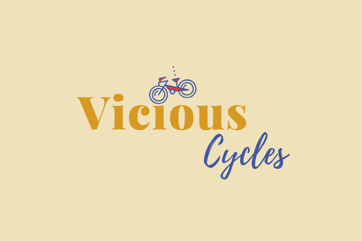

Laura Geisler
LG Creative Designs
Being creative is who I am, and that is why I love being a graphic designer. It’s the process that inspires me. I enjoy taking a vision and creating something spectacular. My passion for design becomes evident with the final result.
As a designer, I specialize in visual identity graphic design to create assets like logos, typography, color palettes, image libraries, and style guides that represent a brand’s personality. I feel it is imperative to ensure brand consistency by creating design elements that are suitable across all visual media.
Featured Projects
View selected projects below. More information can be found at lgcreativedesigns.wordpress.com.
Vicious Cycles
Vicious Cycles is a website project that I produced during my WEB 140 class at Wake Tech. I created the logo, chose the color palette, fonts, and contributed to the content. All web page design was created by myself as part of the project.
View ProjectEducation
Wake Technical College-Raleigh, North Carolina
Advertising and Graphic Design Degree
Graduation to be in 2021